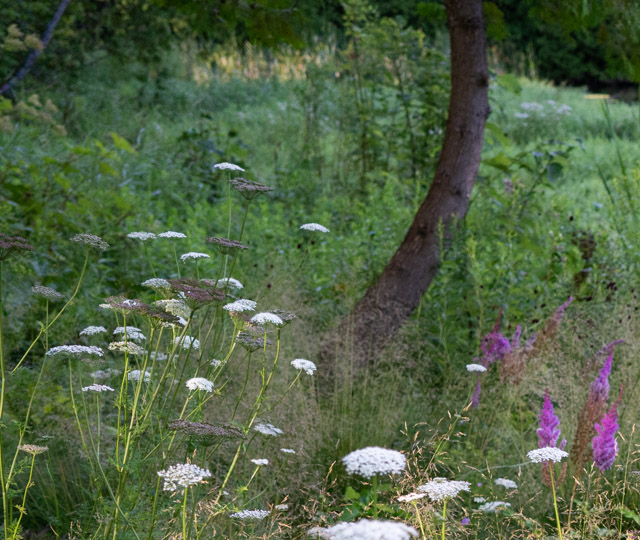
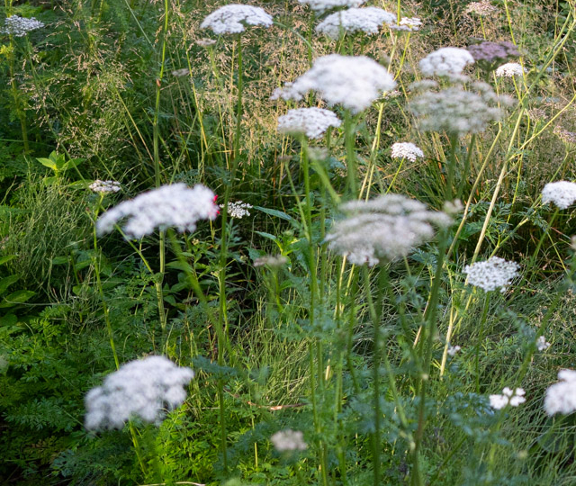
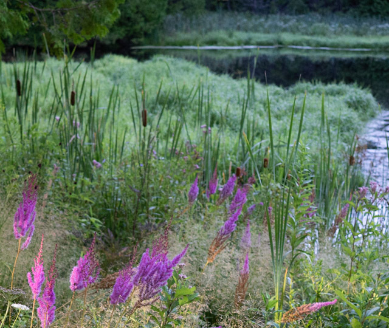
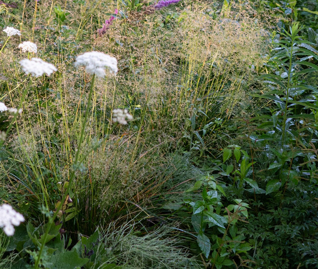
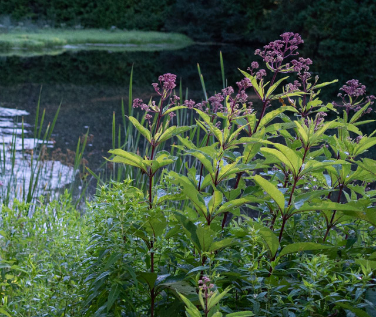
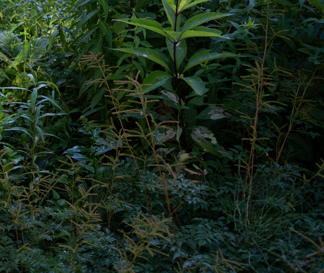

Trees are a vital feature of our work. Both visually and ecologically, they anchor and bind constituent ecological systems. Fungi, animals, and other plants have co-evolved with trees over millennia, forming symbiotic relationships. In addition to supporting wildlife, trees can significantly improve your landscape's health by providing shade and wind protection, capturing carbon, and releasing oxygen. Native to North America, the Pond Cypress featured here can be used to control erosion.

Water Parsnip is a semi-aquatic wildflower that forms clusters of white umbelliform flowers. This plant is a member of the carrot family, growing natively throughout North America. The flowers attract many different native bees such as Halictid bees, masked bees, and cuckoo wasps. Other insects, including the larval stage of the Black Swallowtail butterfly, are also attracted to Water Parsnip. Unlike other species in the carrot family, the foliage is not toxic to mammalian herbivores.

Sources of water like ponds, pools, and even small fountains are an incredible benefit to ecosystems. Water is an essential ecological force that allows plants and animals to thrive. Consideration of your landscape's water table, soil moisture, and drainage gives us a picuture of its hydrology. Along the center of this square, a band of Cattails borders the pond, retaining its shoreline. Cattails, along with other native wetland plants, have been shown to remove pollutants from water.

Grasses and sedges offer unique benefits. Their many, narrow leaves trap cool air and collect dew in the early morning and at night. As both ground cover and border, the rhizomatous root structure of some grasses enables them to fill in spaces that other plants can't, framing and demarcating plantings throughout your landscape. Many native grasses, such as the Tufted Hairgrass here, further this framing effect with the distinctive appearance of their seed heads, which remain diaphanously intact when dormant in winter.

The native perennial Joe Pye Weed thrives in damp conditions. Its height (up to 7 feet) and late-blooming, soft hues make it a striking addition to the right landscape. It hosts the Clymene moth, the eupatorium borer moth, and the three-lined flower moth in their larval form. The fragrant, vanilla scent of its flowers also attracts butterflies and honeybees. The seeds of Joe Pye Weed are food for birds like the Swamp Swallow, whose song can be heard in spring.

The native wildflower Spotted Beebalm (also called Dotted Beebalm) thrives in sandy or dry soils. Reaching heights of two to three feet, its shaggy pink/lavender flowers attract hummingbirds, butterflies and native bees throughout the summer months. The distinctive square stems and oppositely-arranged leaves identify it as a member of the mint family. Beebalm tea can be brewed from the plant's fragrant leaves.